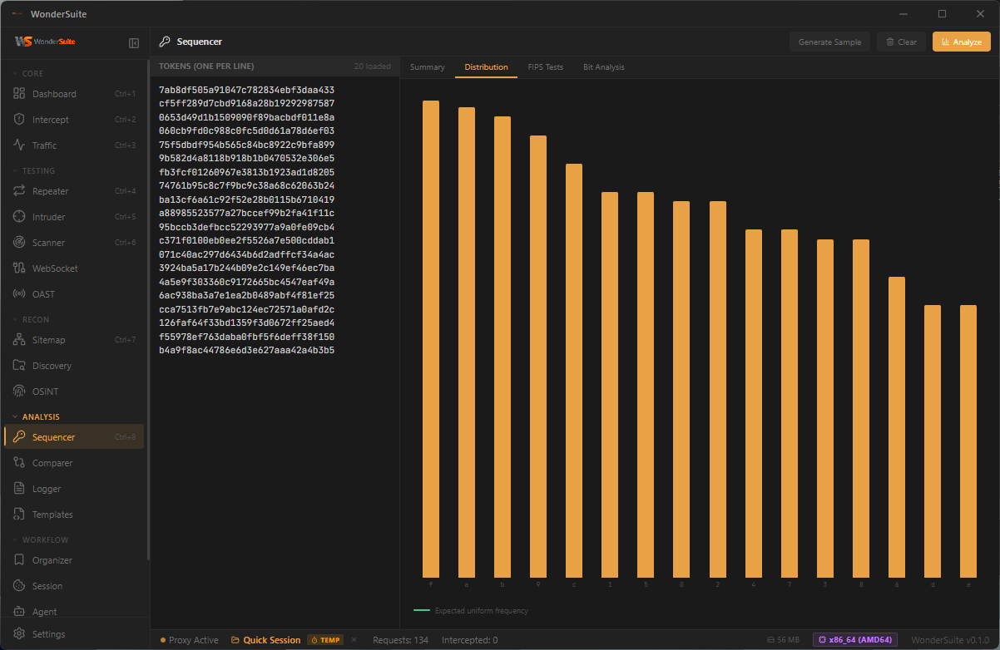

Blind Vulns · Token Analysis
Out-of-band detection · entropy
Catch what
others miss.
Built-in OAST listener on HTTP, DNS, SMTP. Token sequencer with FIPS distribution & bit-level entropy analysis.
OSINT

Sequencer
